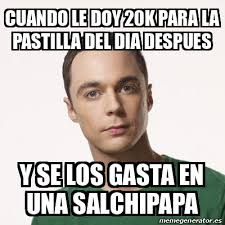

<!-- <!DOCTYPE html>
<html lang="en">

<head>
    <meta charset="UTF-8">
    <meta name="viewport" content="width=device-width, initial-scale=1.0">
    <title>Supervivencia en la montaña-Embarcacíon</title>
    <link href="https://cdn.jsdelivr.net/npm/bootstrap@5.3.1/dist/css/bootstrap.min.css" rel="stylesheet"
        integrity="sha384-4bw+/aepP/YC94hEpVNVgiZdgIC5+VKNBQNGCHeKRQN+PtmoHDEXuppvnDJzQIu9" crossorigin="anonymous">
    <link rel="stylesheet" href="../assets/styles/Global.css">
</head>

<body>
    <audio autoplay>
        <source src="../assets/audio/legend.mp3" type="audio/mp3">
    </audio>
    <div class="container-main">
        <p class="introduccion">
            Te has decidido cruzar el río con un pedazo de tronco que se encontraba cerca de la orilla. Ahora que estás
            embarcado, te percatas de que la corriente va demasiado fuerte y no logras escapar de ella. Estás a punto de
            caer por una cascada. Lo bueno es que cuentas con un certificado del SENA virtual de ciertos niveles de
            natación y eso te da seguridad. Al caer al precipicio de unos 20 metros, te sumerges en unas ruinas que se
            encuentran bajo el agua. Es hermoso allá, pero no logras encontrar una salida. Lo que puedes hacer ahora es
            tomarte la pastilla del día después y volver a intentarlo.
        </p>
        <div class="container-img">
            
        </div>
        <a href="../index.html"> <button type="button" class="btn btn-success">Volver a Intentar</button></a>
    </div>

    <script src="https://cdn.jsdelivr.net/npm/bootstrap@5.3.1/dist/js/bootstrap.bundle.min.js"
        integrity="sha384-HwwvtgBNo3bZJJLYd8oVXjrBZt8cqVSpeBNS5n7C8IVInixGAoxmnlMuBnhbgrkm"
        crossorigin="anonymous"></script>
</body>

</html> -->